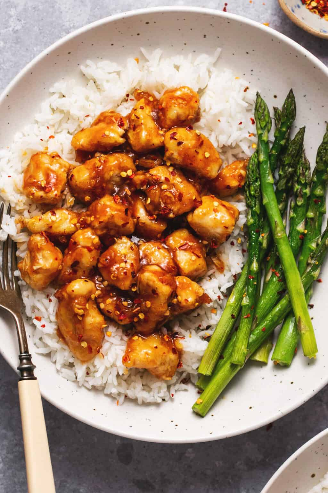

Honey Sriracha Chicken

Description
A delectable combination of sweetness and just the right amount of kick, this honey srirachi chicken recipe is the perfect way to spice up your day.
Ingredients
- 3-4 diced chicken breasts
- 1/3 cup corn starch
Sauce
- 1 cup water
- 2-3tbs sriracha
- 5tbs soy sauce
- 1/4 cup sugar
- 2-3tbs honey
- 2tbs corn starch
- 2tbs cold water
- crushed red pepper
- rice (for serving)
Steps
- In a medium sauce pane, combine 1 cup of water, sriracha, soy sauce, garlic, sugar, and honey and stir. Bring mixture to a boil over medium heat.
- Whisk together the 2 tablespoons corn starch and remaining 2 tablespoons of water until dissolved. Add to sauce pan and stir until thickened. Reduce heat to low.
- Add diced chicken and 1/3 cup corn starch to a large plastic bag. Seal the bag and shake to coat chicken. Drizzle a large pan or skillet with oil over medium heat. Add chicken and sauté until browned and chicken is cooked through.
- Add the sauce and stir to coat. Sprinkle with crushed pepper flakes if desired and serve over warm rice.
Source: Creme de la Crumb - Honey Sriracha Chicken
Take Me Home